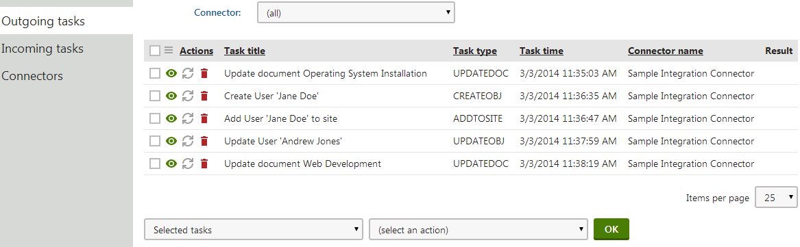
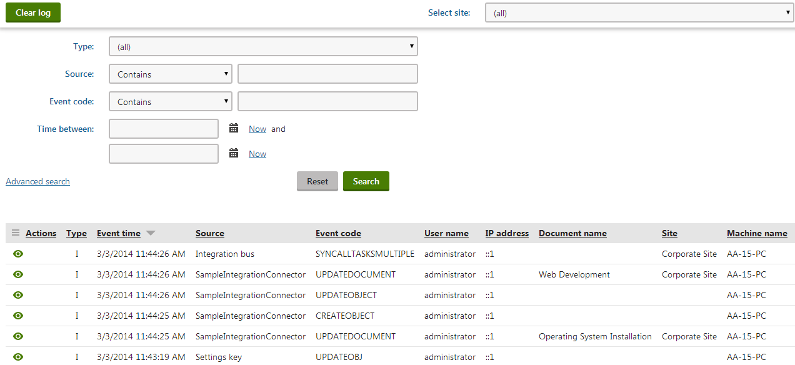

Example - Integration connector
The default installation of Kentico provides a sample integration connector. The connector implements two subscriptions for outgoing tasks:
Synchronization of user objects
Synchronization of all pages on all websites in the system
The connector's purpose is purely demonstrative – it only logs events in the Event log application for each creation, modification or deletion of a user or page.
Adding the sample connector to your web project
Open your Kentico installation directory (by default C:\Program Files\Kentico\<version>).
Expand the CodeSamples\CustomizationSamples\Classes\ sub-directory.
Copy the SampleIntegrationConnector.cs file into the CMS\App_Code folder of your web project.
Information for web application projects
If your Kentico project was installed as a web application, copy the sample file into the Old_App_Code folder instead.
You must also manually include the sample class files into the project:
Open your application in Visual Studio.
Click Show all files at the top of the Solution Explorer.
Expand the Old_App_Code folder, right-click the new file and select Include in Project.
Viewing the connector code
To see how the sample connector is implemented:
Open your web project in Visual Studio.
Expand the ~/App_Code/ folder and edit the SampleIntegrationConnector.cs class.
public class SampleIntegrationConnector : BaseIntegrationConnector{ #region "Initialization (subscribing)" /// <summary> /// Initializes the connector name and registers subscriptions. /// </summary> public override void Init() { // Initializes the connector name (must match the code name of the connector object in the system) ConnectorName = GetType().Name; // Creates subscription for all user objects (predefined method) SubscribeToObjects(TaskProcessTypeEnum.AsyncSnapshot, UserInfo.OBJECT_TYPE); // Create subscription for all pages on all sites (predefined method) SubscribeToAllDocuments(TaskProcessTypeEnum.AsyncSimpleSnapshot, TaskTypeEnum.All); // Demonstrates how to create subscriptions manually // ObjectIntegrationSubscription objSubscription = new ObjectIntegrationSubscription(ConnectorName, TaskProcessTypeEnum.AsyncSnapshot, TaskTypeEnum.All, null, PredefinedObjectType.USER, null); // SubscribeTo(objSubscription); // DocumentIntegrationSubscription pageSubscription = new DocumentIntegrationSubscription(ConnectorName, TaskProcessTypeEnum.AsyncSimpleSnapshot, TaskTypeEnum.All, null, null, null, null); // SubscribeTo(pageSubscription); }...To be functional, every connector must have the ConnectorName property initialized in the Init() method. The value must match the code name of the connector object registered in the system. The sample connector uses the name of the ConnectorName – SampleIntegrationConnector.
The sample connector is defined in the App_Code folder, so the file contains code that allows the system to load the class when working with the connector — the RegisterCustomClass assembly attribute declared above the SampleIntegrationConnector class. See Loading custom classes from App_Code for more information.
[assembly: RegisterCustomClass("SampleIntegrationConnector", typeof(SampleIntegrationConnector))]The RegisterCustomClass attribute accepts two parameters:
The first parameter is a string identifier representing the name of the connector class. The name must match the value of the Class name field specified for the given connector object in the system (SampleIntegrationConnector in this example).
The second parameter specifies the type of the class as a System.Type object.
Registering the connector
Open the Integration bus application in the Kentico administration interface.
Select the Connectors tab.
Click New connector.
Fill in the following properties:
Display name: Sample integration connector
Provider class - Assembly name: (custom classes)
Provider class - Class: SampleIntegrationConnector
Enabled: Yes (selected)
Click Save.
Testing the connector
Open the Settings application.
Select the Integration -> Integration bus category.
Adjust the settings as follows:
Enable system integration bus: Yes (selected)
Enable logging of outgoing tasks: Yes (selected)
Enable processing of outgoing tasks: No (cleared)
The sample connector only generates outgoing tasks, so you can leave the handling of incoming tasks disabled. Disabling processing of outgoing tasks allows you to see the integration tasks in the user interface. If you enable processing, the system executes the tasks immediately, and you only see the results in the event log.
Click Save.
Try creating and modifying some pages and user accounts.
Open the Integration bus application. On the Outgoing tasks tab, you can see a list of tasks logged for your actions. The Synchronize (
 ) action is grayed out since processing of tasks is disabled in the system settings.
) action is grayed out since processing of tasks is disabled in the system settings.

Viewing outgoing integration tasksGo back to Settings -> Integration -> Integration bus, check Enable processing of outgoing tasks and click Save.
Return to Integration bus -> Outgoing tasks. The Synchronize (
) action is now enabled.To execute all tasks:
Select All tasks in the first selector below the list.
Choose the Synchronize action.
Click OK.
You can see the events logged by the integration tasks in the Event log application.

Events logged by the sample integration connector